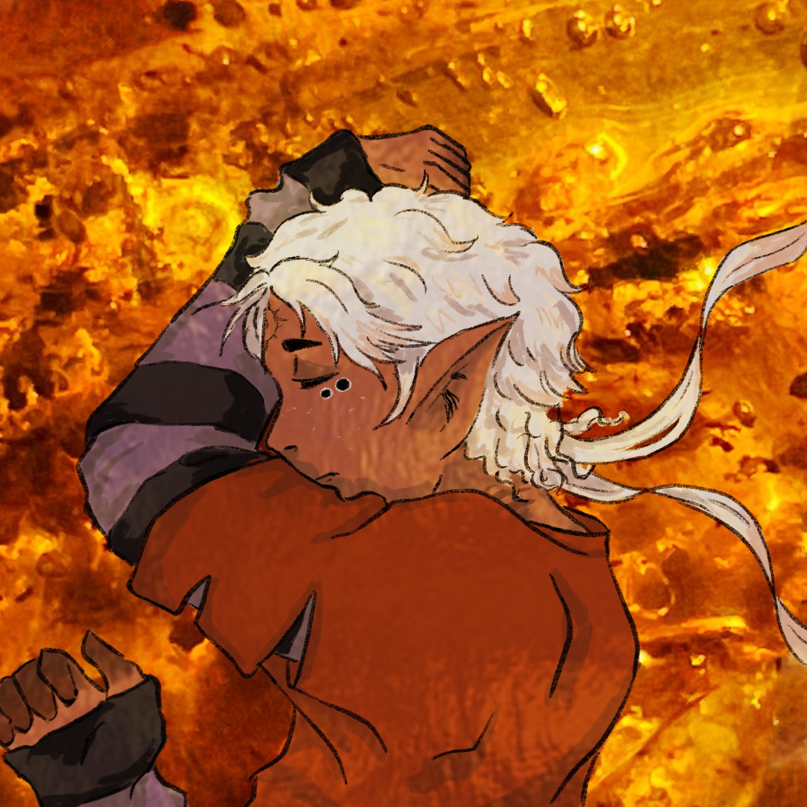
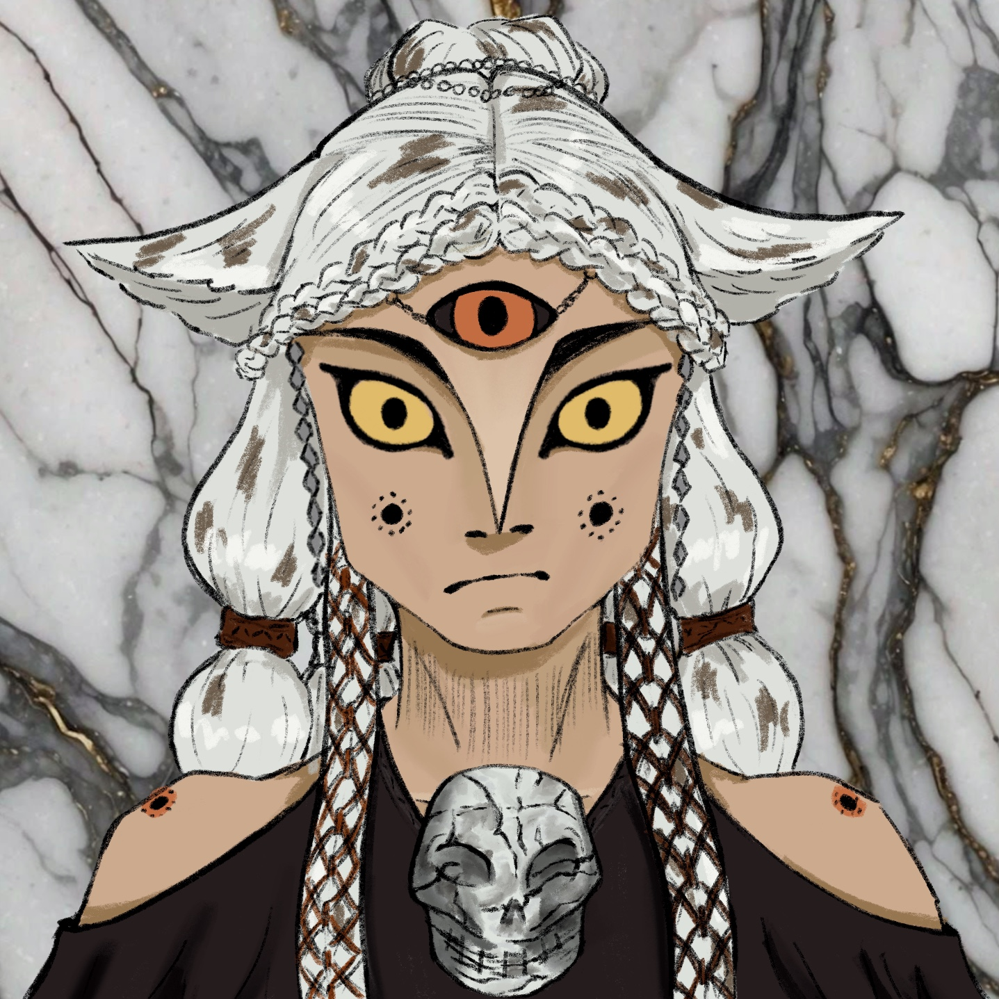
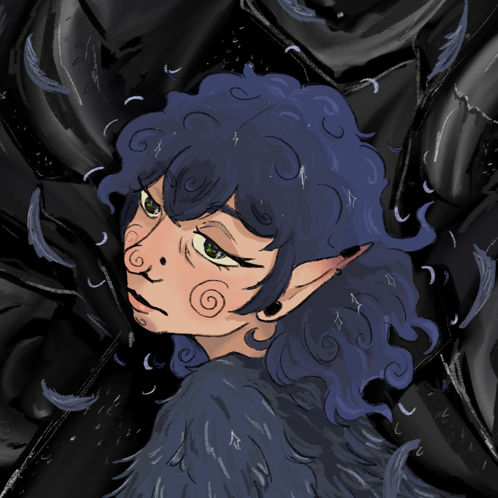

The Cast!
As StarChild called her original characters "the cast", we at the Star Collective have decided to continue this adorable little tradition.
We are proud to introduce you to the main three OCs that we have uncovered so far
Though if our memories are to be believed, there are many more just waiting to be uncovered.

Orion
Orion was StarChils11s first known OC
He is a jellyfish mermaid, though is rarely portrayed that way, seemingly as a reference to the little mermaid fairy tale.
Orion is most often used in reference to the Orion constelation and myth. StarChild11 seemed to have a strong fascination with the constelation, even going as far as to tatoo it on their own skin, though no photos remain.

Morai
Morai is StarChild11's most well known OC.
He has the most remaining artwork out of all of them, due to many in the fandom downloading pieces to use for profile pictures etc.
Morai is also the oldest age wise of all of StarChild11s cast, being already 30. He even is canonically gay, which was quite rare at the time. However, every piece seems to have a different partner. It is still debated whether or not Morai had several boyfriends, or just a shapeshifter boyfriend.

Hugo
Hugo is often seen as StarChild's sona.
While it is unknown whether StarChild is a man or a woman, it is known that they often drew themselves as the character Hugo, who was usually referred to as "above gender" and sometimes even as transsexual.
Hugo is most well remembered by people on the autism spectrum, as StarChild11 would often use them in short comics about their own strugles with autism. None of the comics were recovered so far.